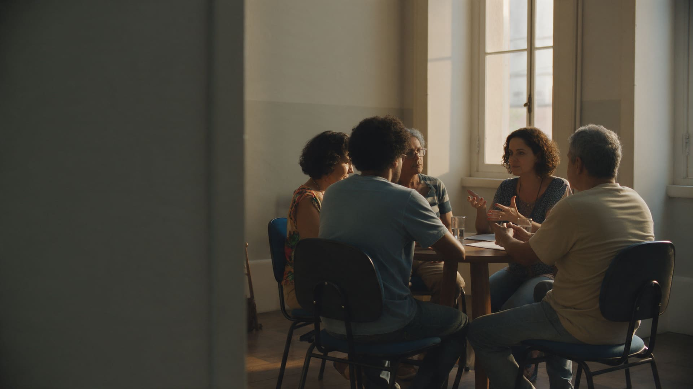

O olhar restaurativo aplicado a situações concretas.
Partimos do que aconteceu, de como as pessoas são afetadas e do que precisa mudar para reduzir danos, reparar o possível e seguir em frente.

Fortalecendo relações
Construir vínculos mais saudáveis entre pessoas, equipes e instituições.
Conhecer as pessoas para além dos papéis que ocupam
A convivência costuma aproximar pessoas em razão dos papéis que ocupam, mas nem sempre permite que elas realmente se conheçam. Criamos espaços em que trajetórias, valores e experiências de vida podem aparecer, fortalecendo vínculos de confiança.
Criar espaços seguros para conversar sobre o que normalmente permanece em silêncio
Nem sempre aquilo que importa encontra espaço para ser dito. Conduzimos processos estruturados que permitem abordar situações difíceis, tensões acumuladas e experiências que, quando permanecem em silêncio, podem afetar as pessoas e suas relações.
Ampliar pontos de conexão
Criamos oportunidades para que as pessoas descubram afinidades, experiências e valores comuns entre si. Esses pontos de contato ampliam o repertório da relação e abrem novas possibilidades para a forma como se relacionam e convivem no dia a dia.

Compreendendo necessidades
Olhamos para as situações pelo modo como afetam as pessoas, revelando danos, perspectivas e necessidades.
Compreender diferentes perspectivas
Criamos condições para que diferentes percepções possam ser expressas com segurança e para que as pessoas conheçam outros modos de perceber aquilo que estão vivendo, ampliando o entendimento sobre a situação e sobre o que ela exige de cada pessoa.
Reconhecer impactos
Buscamos compreender como situações, comportamentos e formas de convivência afetam as pessoas e as relações. Isso permite tornar visíveis impactos que nem sempre são percebidos por quem os produz ou por quem convive com eles no cotidiano.
Identificar necessidades
Identificar o que as pessoas precisam para lidar melhor com a situação e o que torna possível reparar ou minimizar seus impactos. Esse reconhecimento orienta as decisões sobre o que fazer a partir dali, dentro e fora do processo.

Mobilizando para a ação
Quem pode contribuir para atender às necessidades geradas pelos danos e o que precisa mudar nas relações?
Quem deve agir
Reconhecer quem pode agir para atender às necessidades reveladas pelos danos e contribuir para lidar com suas consequências, dentro e fora das pessoas diretamente envolvidas. Isso distribui a responsabilidade para além de quem causou o dano.
Reparar o que for possível
Construir ações para restaurar ou minimizar as consequências dos danos, considerando as necessidades de quem foi afetado e as possibilidades de quem pode contribuir. Nem tudo se repara, mas quase sempre há algo a fazer para reduzir o impacto.
Rever formas de relação
Reconhecer aspectos das relações que favorecem situações problemáticas e definir o que precisa mudar, ser limitado ou encerrado. Quando a convivência não pode seguir, criamos condições para encerrá-la de forma respeitosa e sem novos danos.

Incorporando novas práticas
Mudanças duradouras dependem de incorporar ao cotidiano o que foi construído ao longo do processo.
Levar para o cotidiano
O que é desenvolvido durante o processo pode ultrapassar aquele espaço e passar a orientar também relações e situações do dia a dia. O aprendizado deixa de ficar restrito a um momento e vira parte da rotina das pessoas e das equipes.
Evitar o retorno aos mesmos padrões
Reconhecer comportamentos e formas de relação associados aos problemas permite pensar em cuidados que reduzam a possibilidade de retorno aos padrões anteriores. Não se trata de vigiar, mas de sustentar no tempo o que mudou.
Sustentar novas práticas
A incorporação de práticas permanentes ajuda a preservar as mudanças alcançadas e oferece outras formas de lidar com tensões, dificuldades e novos conflitos, sem depender de uma nova intervenção a cada vez que algo surge.
Seja qual for o contexto.
Investir em práticas restaurativas pode contribuir para construir novas formas de lidar com conflitos, responder a danos e fortalecer relações.